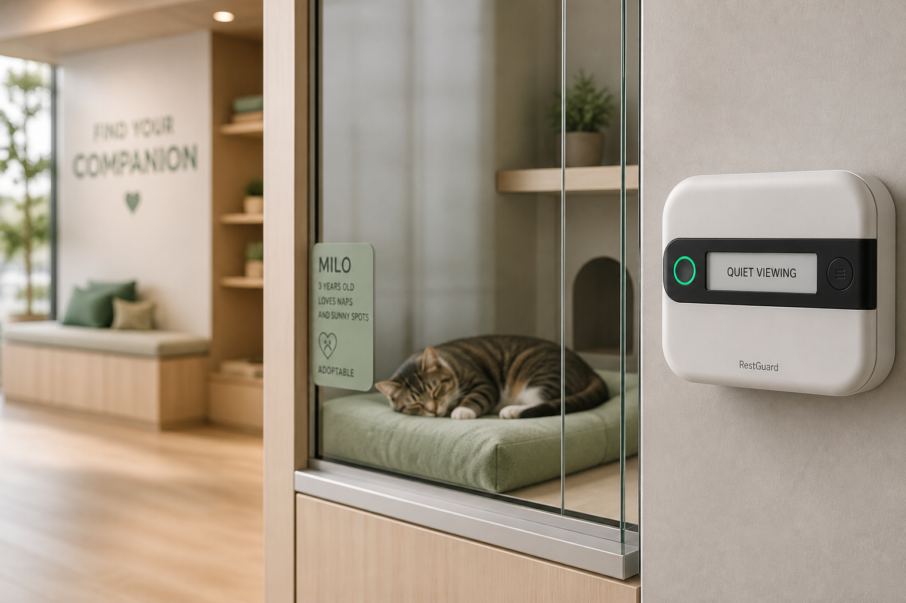
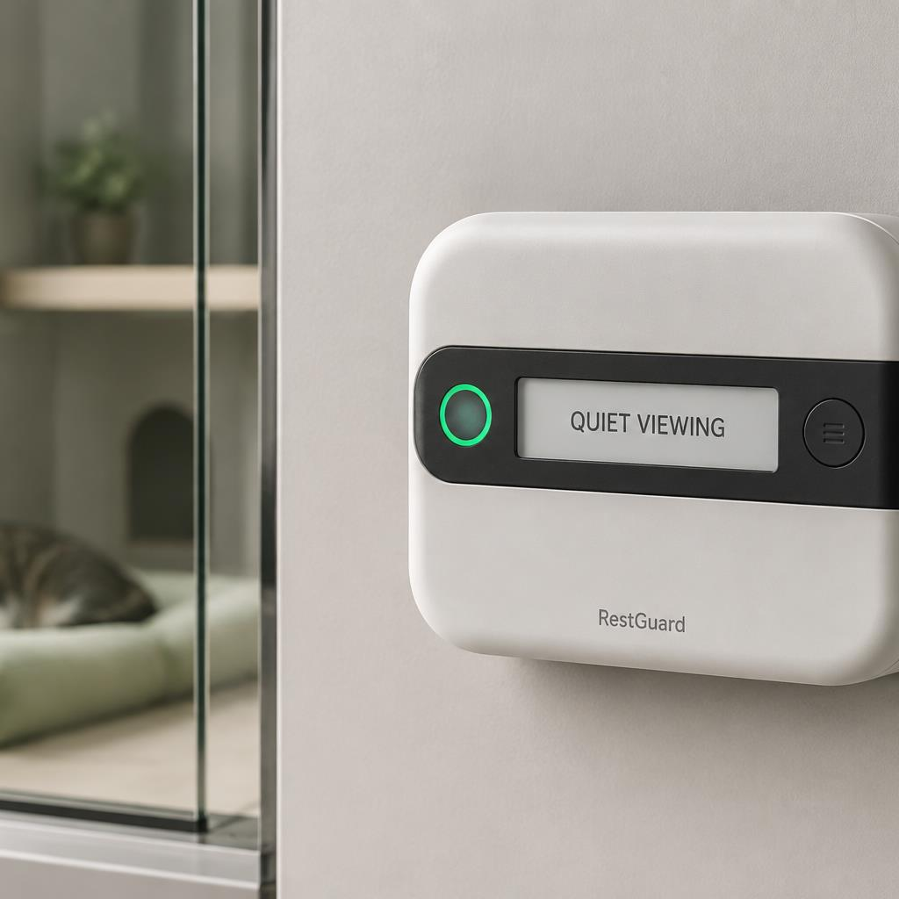
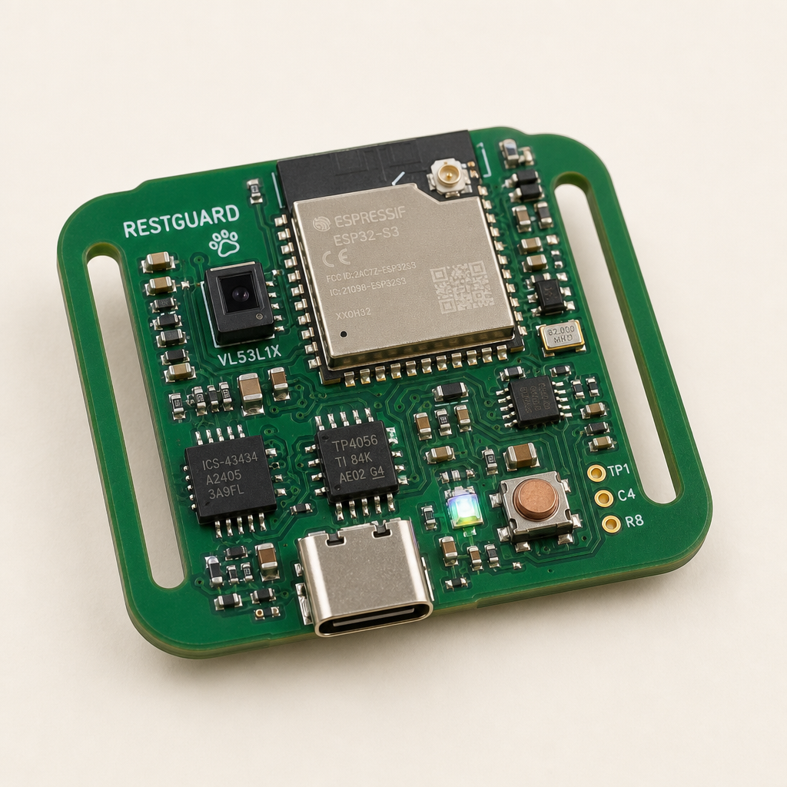
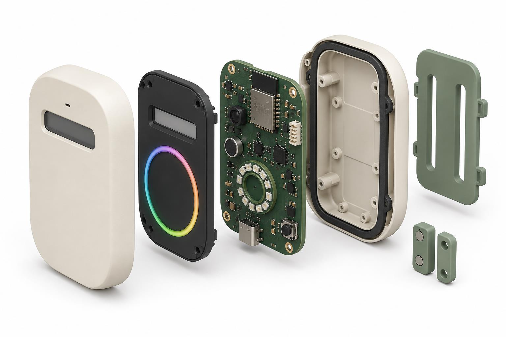
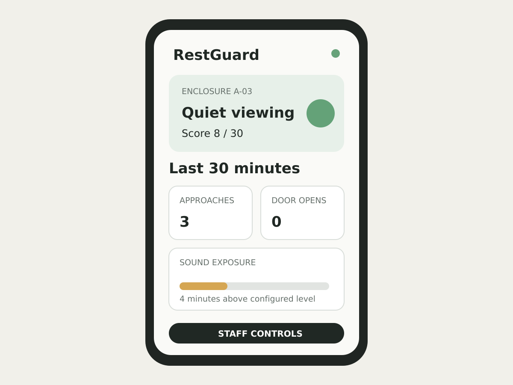

Green
Quiet viewing
Observe calmly. Score 0–10 in the rolling 30-minute window.

Animal-care engineering / Non-contact sensing
A compact device for adoption centres, pet-care retailers and boarding rooms. It watches the enclosure–visitor boundary — not the animal — and turns three environmental events into one humane public state.
01 / The opportunity
A visitor approaches. Another opens the door. Noise continues. Staff can see each event, but the accumulated pattern is difficult to hold across visitors and shifts.
Existing pet technology is dominated by location tracking, feeding and health wearables. RestGuard instead focuses on the enclosure–visitor boundary — so animals keep choice and control, and visitors get a clear, kind instruction.
Time-of-flight proximity with a dwell rule, so people who simply walk past are not counted as an approach.
A digital MEMS microphone treated as a sound-level sensor. Only short-window RMS summaries are kept — never a waveform or speech.
A magnetic reed switch counts open and close events. Handling is visible without a camera on the animal.
02 / Product concept
Colour is always paired with plain language, so the system never depends on colour perception alone. Staff judgment always takes priority.
Observe calmly. Score 0–10 in the rolling 30-minute window.
Disturbance is accumulating. Score 11–20. Hysteresis stops the ring from flickering.
Score above 20, or a staff override. Do not interact unless staff directs otherwise.
Not a diagnosis. RestGuard reports measurable events and offers guidance. It does not read emotions, and it does not replace trained staff.
03 / Product appearance
Matte recycled ABS/PC, a black sensor bezel, a readable e-paper line, and a light ring that visitors can understand from a few steps away.

04 / The module
The first electronics object is a Tracer-style assembled board: microcontroller, time-of-flight, digital microphone, charge path and USB, packed onto a strap-slot PCB that can live on a bench or a test fixture.
That board is how the sensing idea is proven. The form later hides the same functions in a 100 × 70 × 30 mm shell that mounts outside the enclosure.


05 / Exploding views
Front shell, sensor bezel, electronics, gasket, rear shell, replaceable mounting plate. USB-C power — no sealed battery in the first concept. Two-piece shell with captive screws so a module can be repaired instead of thrown away.
The plate is sage glass-filled nylon so one electronics unit can fit different enclosure geometries. Nothing is attached to the animal.
See the exploded view06 / Getting hands-on
The same simulation language Dyson uses to let people try a machine: press the events, watch the score, see the ring and the message change. Prototype formula, rolling 30-minute window.
D = 2P + 3O + 0.25A
P qualified approaches · O door-open events · A minutes above the sound threshold
Hysteresis: amber at 11, return to green only below 8. This is a prototype score, not a welfare standard.
07 / Staff interface
Summaries, not recordings. Authorized staff can start a rest period, reset after relocation, and change thresholds. The public never sees a ranking of individual animals.
Why this matters: every state is an observable count — not an opaque emotion label.
Pause, rest, reset, thresholds. Professional judgment supersedes the algorithm.

Mobile web-app concept from the portfolio. Future multi-device views may compare zones, but should not rank animals by “stress.”
08 / Who it is for
Predictable quiet periods and no wearable burden. Sensing happens outside the enclosure.
Three-state colour plus a sentence: quiet viewing, please give space, rest period.
Adjustable, explainable summaries. USB power. No camera or audio archive to maintain.
09 / Positioning
RestGuard demonstrates how engineering can translate an ambiguous social problem into measurable requirements while respecting uncertainty. The central design choice was to avoid “emotion detection” and instead build an explainable system around environmental events.
The project integrates industrial design, embedded systems, human–computer interaction, privacy, animal-welfare ethics and experimental planning.
Next
The wearable-science page explains how the three sensors work together. The module page is the hardware object. The prototype lab covers form, function, tests, and limits.